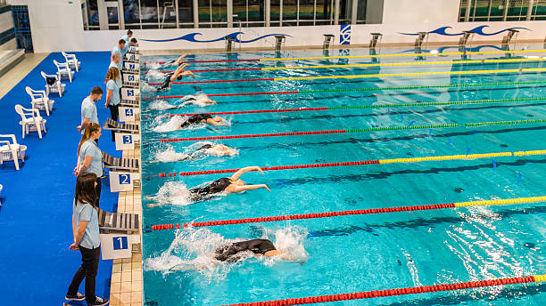

SWIMMING

Rules and Regulations in Swimming
There are four different strokes used in Olympic swimming: freestyle, breaststroke, butterfly and backstroke.
- The programs for men and women are the same, except that the longest race for men is the 1500m whilethe
women’s longest race is the 800m.
-
In addition to individual events for each of these strokes, individual medley events and relays are contested.
-
Medley events utilise all four strokes. In the 200m individual medley, competitors swim 50m of butterfly,followed by 50m backstroke, 50m breaststroke and 50m freestyle.
-
The order is the same for the 400m individual medley, with competitors swimming 100m of each stroke.
-
In the 4x100m medley relay, the race begins with backstroke, then breaststroke, butterfly and freestyle.
-
In freestyle and backstroke, swimmers may touch the wall at the end of the pool with any part of their bodies, so most perform tumbleturns, somersaulting in front of the wall and pushing off it with their feet.
-
However, in individual medley events, swimmers must touch the wall with their hands at the end of thebackstroke leg before switching to breaststroke.
-
Breaststroke and butterfly swimmers have to touch the end of the pool with both hands at the end of eachlap, therefore the tumbleturn is not possible.
-
For breaststroke, freestyle, butterfly and individual medley events, swimmers begin the race by standing onblocks at the end of the pool.
-
Swimmers are given a warning before a loud beep sounds to start the race.
-
A false start results in disqualification at the Olympics.
-
All timing is electronic
—
pressure pads in the blocks and the wall at the end of the pool register whenswimmers have begun and finished their races.
-
In relays, a team is disqualified if a member of the team leaves the blocks more than 0.03 of a secondbefore the team member in the water touches the wall.
-
Olympic events take place in a 50m pool, meaning events longer than 50m require laps to be swum.
-
Water in the Olympic pool is regulated to be between 25ºC and 27ºC.
STROKES
freestyle
- Any stroke is permitted in freestyle events, but all competitors choose the crawl stroke in these eventsbecause it is the fastest stroke. Because of this, the crawl stroke has become known as freestyle
- When swimming freestyle, some part of the body must remain above the water at all times
- The exception is when swimmers start the race and make turns at the end of each lap.
- At these times swimmers are allowed to remain submerged for 15 meters
butterfly
- Backstrokers must swim on their backs with their faces towards the sky.
- They are allowed a degree of body rotation as they swim
- Both the swimmer’s feet must be under the water at the start. After starting, the swimmer can remain
underwater for 15 metres.
Breaststroke
- This stroke requires swimmers to swim face down, moving their arms and legs at the same time in ahorizontal plane.
- After each turn, and at the start, swimmers are allowed to make one arm stroke and leg kick whileunderwater.
- The swimmer’s head must break the surface during each complete stroke.
- Like the butterfly, the swimmer must touch the end of the pool with both hands at the end of each lap.